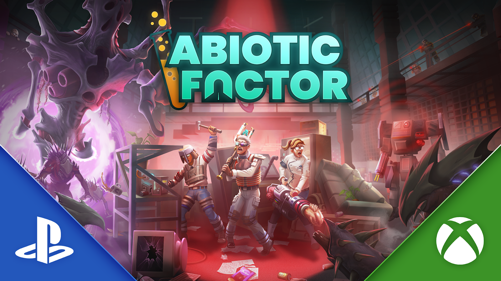

Conclusion
With each of the topics covered, from the subtleties of Abiotic Factor's gameplay loop to its unique level design, what is the ultimate point I'm getting at? What do these approaches say about the genre of survival-crafters as a whole, and what do all of these topics ultimately tie back to that makes it different from the rest?
Importance of Innovation
While the survival-crafting genre is frequently successful, the main problem many in it struggle with is innovation. With a genre that's snowballed and drawn attention ever since Minecraft was released over 15 years ago, most games have started to feel repetitive and similar, despite their unique mechanics. There are plenty of survival-crafters set in a post-apocalyptic world with zombies, like 7 Days to Die, Project Zomboid, or Days Gone. There are even more set in a basic wilderness with hostile wildlife, such as Raft, Green Hell, or The Forest. These are all solid, sometimes fantastic games, but in the wider context of the genre, they tend not to bring anything truly revolutionary to the table, which could lead to consumers getting frustrated and tired with the genre as a whole.
That's why this game is significant as it is. Not only does it offer something new with its setting, lore, and gameplay, but it also handles established concepts with a keen eye for detail and respect. It keeps the genre fresh and should raise the bar for developers of future survival-crafting games, rather than letting them get complacent on a formula that's generally worked for nearly two decades.
And that's not to say that Abiotic Factor is without flaws or even avoids every pitfall that games in the genre fall into. There are plenty of flaws with some of its systems, like skills or enemy/weapon balance. And there are even more aspects that I wish I had time to cover, like the story or other inspirations Abiotic Factor has drawn from.
At the very least, for those who are interested in the game after what I've discussed, there are plenty of platforms to try the game out. Abiotic Factor should be available on either Xbox Game Pass or PS Plus for free. If neither of those options works, it's well worth the 35$ price tag and is likely to go on sale on Steam and potentially other platforms during the holidays.